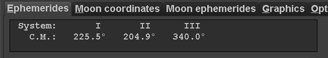
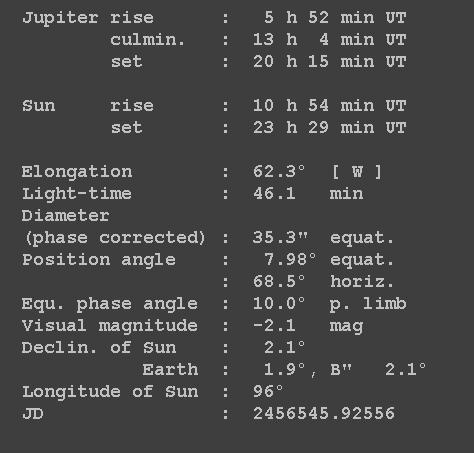
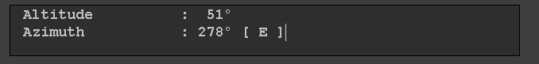

from sikuli.Sikuli import * # import subprocess, sys, os, os.path, shutil, ntpath, re from SimpleXMLRPCServer import SimpleXMLRPCServer as Server #srv = Server(("127.0.0.1", 1337),allow_none=True) # as an example on the same machine #if not srv: exit(1) # setAutoWaitTimeout(300) # # # -*- coding: UTF-8 -*- # Planet=input("Input Planet's position number:\n EG: 5= Jupiter") #Notify='notify-send -i \'/home/miphilli/Dropbox/5-Permanent/Icons/WinJUPOS-N-up.png\' \'Starting a Sikuli Script\' -t 30000' #os.popen(Notify+Key.ENTER) arcsec='\"' Deg="°" #Deg="" degree=unicode(Deg, errors="ignore") CurrentFile="D:\\Dropbox\\D-Permanent\\Astronomy\\Logs\\currentephem.txt" #file = open(CurrentFile,"r") # ISODATE="" # # #WINJUPOS # Cmsys=(Pattern().similar(0.29)) Eph=(Pattern().similar(0.36)) #Cmsys=(Pattern("1433027845741.png").similar(0.29)) #Eph=(Pattern("1433027864991.png").similar(0.22)) # #os.popen("killall workrave") switchApp("WinJUPOS") # #CMSYS # wait(Cmsys) switchApp("WinJUPOS") hover(Cmsys) rightClick(Cmsys) sleep(0.5) type("c") sleep(0.5) UTandCM=ALTtext = Env.getClipboard() DATE=UTandCM.split()[0] T=UTandCM.split()[2]+UTandCM.split()[3]+'C' TIME=T.replace(':','-')[:-5] #CMSYStext=UTandCM[35:].strip().lstrip()[:0].encode('utf-8',errors='ignore') CMSYStext=UTandCM[35:].encode('utf-8') #print(CMSYStext) # #ALT #hover(Alt) dragDrop(Pattern().similar(0.40).targetOffset(-317,-30),Pattern().similar(0.36).targetOffset(14,-26)) #dragDrop(Pattern("1433027942175.png").targetOffset(-407,-22), Pattern("1433027946540.png").targetOffset(128,18)) type("c", KEY_CTRL) ALTtext = Env.getClipboard() ALTtext=unicode(ALTtext.encode('utf-8').strip(), errors="ignore") print("This is ALTtext") print(ALTtext) a=ALTtext ALT=a[0:3]+': '+a[-2:] #ALT =str(ALTtext.split(':')[1][:-2]) print("This is ALT") print(ALT) # #Ephemerdis # hover(Eph) rightClick(Eph) sleep(0.5) type("c") sleep(0.5) Ephtext = Env.getClipboard() E=Ephtext.split() ''' R=("j"+DATE+"_"+TIME+"\n\n"+CMSYStext+"\n\n"+ "Dia:"+Dia+", mag:"+Mag+"\n"+ "Alt:"+ALT+", Ls:"+LoS+ "\nElong: "+Elong+"("+ElongDir+")") Dia=E[51] Mag=E[71] Ring=E[80].rstrip(',') Elong=E[39] ElongDir=E[41] LoS=E[87] print("This is DATE") print(DATE) print("This is TIME") print(TIME) print("This is CMSYStext") print(CMSYStext) print("This is Dia") print(E[52]) print("This is Mag") print(E[72]) print("This is Ring") print(E[81].encode('utf-8').strip().rstrip(',')) print("This is Elong") print(E[40].encode('utf-8').strip()) print("This is ElongDir") print(E[42].encode('utf-8').strip()) print("This is LoS") print(E[88].encode('utf-8').strip()) ''' if Planet == '5': Dia=E[52].encode('utf-8').strip() Mag=E[72].encode('utf-8').strip() Ring=E[81].encode('utf-8').strip().rstrip(',') Elong=E[40].encode('utf-8').strip() ElongDir=E[42].encode('utf-8').strip() LoS=E[88][:-1].encode('utf-8').strip() # #RESULTS # print("j"+DATE+"_"+TIME+"\n") print(DATE+" - "+T) print(CMSYStext+"\n") print("Dia:"+Dia+", mag:"+Mag) print(ALT+", Ls:"+LoS) print("Elong: "+Elong+"("+ElongDir+")") if Planet == '6': type("Saturn") print("THIS IS FOR Saturn!!!") for x in E: i=E.index(x) print(str(i)+' '+str(x.encode('utf-8').strip())) print('') #type(Key.ENTER) #type(DATE+" - "+T) #type(Key.ENTER) #paste(R) #type('s', KEY_CTRL) #sleep(2) Elong=E[40][:-1] ElongDir=E[42] Dia=E[52] Mag=E[72] LoS=E[88].lstrip(':').replace('','')[:-1] De=E[83][:-1] print("s"+DATE+"_"+TIME) print(DATE+" - "+T) print("\n"+CMSYStext) print "LoS="+LoS print("\n"+"Dia:"+Dia+", mag: "+Mag+"\n"+ALT+degree+", De: "+De+degree+"\nElong: "+Elong+"("+ElongDir+")") if Planet == '4': type("Mars") print("THIS IS FOR MARS!!!") for x in E: i=E.index(x) print(str(i)+' '+str(x.encode('utf-8').strip())) print('') #type(Key.ENTER) #type(DATE+" - "+T) #type(Key.ENTER) #paste(R) #type('s', KEY_CTRL) #sleep(2) Elong=E[40][:-1] ElongDir=E[42] Dia=E[50] Mag=E[74] LoS=E[80].lstrip(':').replace('','')[:-1] Phase=str(1-float(E[54])) print("m"+DATE+"_"+TIME) print(DATE+" - "+T) print("\n"+CMSYStext) print "LoS="+LoS print("\n"+"Dia:"+Dia+", mag:"+Mag+"\n"+ALT+degree+", Phase:"+Phase+"\nElong: "+Elong+"("+ElongDir+")") # #RESULTS # # R=("m"+DATE+"_"+TIME+"\n\n"+CMSYStext+"\n"+"Ls= "+LoS+degree+"\n\n"+ # "Dia:"+Dia+", mag:"+Mag+"\n"+ # "Alt:"+ALT+", Phase:"+Phase+ # "\nElong: "+Elong+"("+ElongDir+")") # print(R) if Planet == 'Venus': Dia=E[49] Mag=E[74] Elong=E[39] ElongDir=E[41] Phase=str(float(E[54])) # #RESULTS # R=("v"+DATE+"_"+TIME+"\n\n"+CMSYStext+"\n\n"+ "Dia:"+Dia+", mag:"+Mag+"\n"+ "Alt:"+ALT+", Phase:"+Phase+ "\nElong: "+Elong+"("+ElongDir+")") if Planet == 'Mercury': Dia=E[49] Mag=E[74] Ring=E[80].rstrip(',') Elong=E[39] ElongDir=E[41] LoS=E[90] # #RESULTS # #print(UTandCM.encode('utf-8')) #print(Dia) #print(Mag) print(CMSYStext) #print(LoS.encode('utf-8')) #print(Elong.encode('utf-8')) #print(ElongDir) print(Deg) Phase=str(float(E[54])) ALT=ALT.encode('ascii', 'ignore').decode('ascii') TIME=TIME.encode('ascii', 'ignore').decode('ascii') LoS=LoS.encode('ascii', 'ignore').decode('ascii') Elong=Elong.encode('ascii', 'ignore').decode('ascii') print(TIME) R=("Me"+DATE+"_"+TIME+"\n\n"+CMSYStext+"\n\n"+ "Dia:"+Dia+", mag:"+Mag+"\n"+ "Alt:"+ALT+", Phase:"+Phase+ "\nElong: "+Elong+degree+"("+ElongDir+")") if Planet == 'Neptune': Dia=E[51] Mag=E[71] Ring=E[80].rstrip(',') Elong=E[39] ElongDir=E[41] LoS=E[87] # #RESULTS # R=("n"+DATE+"_"+TIME+"\n\n"+CMSYStext+"\n\n"+ "Dia:"+Dia+", mag:"+Mag+"\n"+ "Alt:"+ALT+", Ring:"+Ring+ "\nElong: "+Elong+"("+ElongDir+")") if Planet == 'Uranus': Dia=E[51] Mag=E[71] Ring=E[80].rstrip(',') Elong=E[39] ElongDir=E[41] LoS=E[87] # #RESULTS # R=("n"+DATE+"_"+TIME+"\n\n"+CMSYStext+"\n\n"+ "Dia:"+Dia+", mag:"+Mag+"\n"+ "Alt:"+ALT+", Ring:"+Ring+ "\nElong: "+Elong+"("+ElongDir+")") # ''' os.popen("notepad "+CurrentFile) sleep(5) type(Key.END, KEY_CTRL) sleep(0.5) type(Key.ENTER) type(Key.ENTER) #type(Deg) print("typing Planet") ''' if Planet==5: type("Jupiter") #type(Key.ENTER) #type(DATE+" - "+T) #type(Key.ENTER) #paste(R) print("j"+DATE+"_"+TIME) print(DATE+" - "+TIME+"UTC") print("\n"+CMSYStext) print("\n"+"Dia:"+Dia+", mag:"+Mag+"\n"+"Alt:"+ALT+", Ls:"+LoS+"\nElong: "+Elong+"("+ElongDir+")") #type('s', KEY_CTRL) #sleep(2)